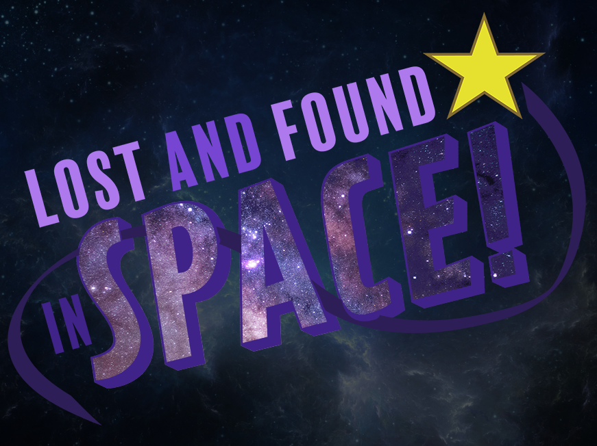

Lost & Found in Space!
Global Game Jam 2021. Theme - Lost and FoundOverview

Global Game Jam was completely online this year due to COVID-19 restrictions. It was hosted entirely on Discord and Zoom and our team met remotely on evenings.
Because of the added pressure of working remote, we were given four days to complete our games instead of two.
The theme was Lost and Found. We created a 2D co-op game in Unity and coded in C#. The main idea is that Player 1 is lost and trapped in a room that's trying to kill him. Player 2 has to run through the map and solve puzzles to find Player 1 before he is killed. We completed our game on time (with a few bugs)! But most importantly, it was a lot of fun to develop and I learned a lot!
Check out the official Global Game Jam 2021 site for more information about our game and to download the .exe build for PCs!
Visit GlobalGameJam.org
The theme was Lost and Found. We created a 2D co-op game in Unity and coded in C#. The main idea is that Player 1 is lost and trapped in a room that's trying to kill him. Player 2 has to run through the map and solve puzzles to find Player 1 before he is killed. We completed our game on time (with a few bugs)! But most importantly, it was a lot of fun to develop and I learned a lot!
Check out the official Global Game Jam 2021 site for more information about our game and to download the .exe build for PCs!
Visit GlobalGameJam.org
Day 1
 We have a team and a game concept... "Lost and Found... in Space!" Let the games begin...
We have a team and a game concept... "Lost and Found... in Space!" Let the games begin...
But actually, we all have class and work so we can't really start anything till tomorrow. Very successful brainstorming session though. We have lots of fun ideas, lets see how many we can implement by Day 4!
Day 2
Worked on some puzzle logic today. I managed to implement a version of Simon Says today.
Didn't have a whole lot of time after school and work. The rules are simple, watch the
pattern
and repeat it by walking over each colored area. The number of the lights to remember
increases as you get closer to the room your friend is in to increase the difficulty. If
you get
it wrong, it flashes red and repeats the pattern so you can try again. If you get it
correct all the lights turn green and the doors open, allowing you to go to the next
room.
Picture of the prototype here -->
Tomorrow the real fun begins!
Tomorrow the real fun begins!
Day 3
 I got a good bit done today! I managed to implement two more puzzles and integrate them into
the environment.
I got a good bit done today! I managed to implement two more puzzles and integrate them into
the environment.
The first puzzle is a simple levers puzzle (pictured on left). The point of the puzzle is to get all the levers in the up position. When you switch one lever up or down, it also switches the levers directly next to it. The logic was pretty straight forward so I was able to code it pretty quickly. I instantiated the levers in a random start position and through code so the number of levers could be adjusted for varying levels of difficulty.
The second puzzle I implemented today was more of a task than a puzzle. The player comes across a key that "explodes" when they touch it and flings pieces around the room to random positions. The player then has to collect them all as quickly as possible to unlock the doors and move to the next room. This one was also fairly straight forward to implement so I was actually able to start implementing the fourth puzzle. It's taking me a while though as it is slightly less trivial.
I also added the sprites from our artists and started to test a little bit of game play.
Day 4
Luckily we have a babysitter today because its the LAST DAY! Lots of work to do still. I
have to finish implementing the fourth puzzle and finish adding them all in to the main
scene.
**UPDATE**
We finished our game! Today I learned about using Slowdamp instead of Lerp/Slerp for
moving Game Objects around and it may be my new favorite thing!
**UPDATE**
We finished our game! Today I learned about using Slowdamp instead of Lerp/Slerp for
moving Game Objects around and it may be my new favorite thing!
We were putting finishing touches on right up to the last second, but we got it
done. There are a few things we missed here and there and some functionality we didn't
get a chance to implement, but we produced a fun, playable game in just a few days,
which is the whole point anyway, right?
Final Thoughts
Overall this was a great experience for me. We had a great team and I got to really put my
Unity skills to the test. I learned a lot of new things and have a cool project to add to my
repertoire. Here are some more pictures from the final game!